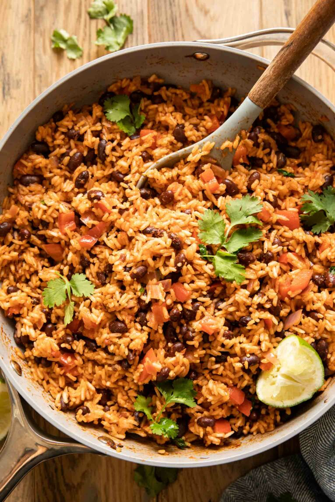

It Is What It Is

Did you know that combining rice and beans makes a complete protein? On their own, they contain incomplete plant proteins. However, combined together, the amino acids are complete! A vegetarian match made in heaven.
Growing up in a hispanic family, rice and beans were a staple for us. We typically made Gallo Pinto multiple times a week and I still love making it to this day! Today, I’m mixing it up with savory Spanish flavors and a combination of easy-to-find pantry ingredients in this delicious Spanish Rice & Beans recipe. It’s one of my favorites for a quick and easy dinner that happens to also be wholesome, vegan, vegetarian, gluten-free, and SO flavorful!
Ingredients
- 2 Tablespoons avocado oil
- 1/2 medium onion (chopped)
- 2 teaspoons minced garlic
- 1 medium red bell pepper (chopped)
- 2 cups long grain white rice (see notes for brown rice)
- 1 teaspoon cumin
- 2 teaspoons chili powder
- 2 teaspoons smoked paprika (or regular paprika)
- 1/2 teaspoon cayenne (optional)
- 1/2 cup salsa
- 1/2 cup tomato sauce
- 2 1/2 cups vegetable broth (or chicken broth)
- 2 1/2 cups cooked red beans
- salt/pepper (to taste)
- fresh cilantro (optional)
Steps
- Heat up the oil in a sauté pan over medium heat.
- Add in the chopped onion and garlic, cook for 1-2 minutes.
- Add the chopped bell pepper and cook for 2-3 minutes, adding a dash of salt.
- Add the dry rice and toast for about 2-3 minutes, or until slightly browned.
- Mix in the cumin, chili powder, paprika, cayenne, and a dash of salt and pepper.
- Pour in the salsa and tomato sauce, mixing until combined and cooking for 3-5 minutes.
- Add in the broth, mix, and bring to a simmer.
- Cover and let simmer for about 13-15 minutes, stirring occasionally.
- Add salt and pepper to taste.
- Add in the beans and cook until evenly warm (about 3-5 minutes).
- Add the fresh cilantro (optional) and remove from heat.